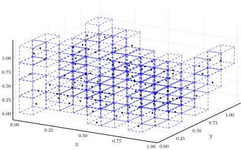

Integer encoding representation
Say we want to impose a rectangular binning on a set of points $x_i$ using a binning scheme specified by ϵ. One way of imposing a partition on $x_i$ is to find the minima along each coordinate axis, then finding an N such that $N\epsilon_i < x_i \leqq (N+1)\epsilon_i$ if starting from the axis minimum. The marginal coordinate representing the point $x_i$ is then the $N$ needed to reach the lower boundary of the box.
An alternative representation of the box covering is the Coordinate representation.
#
StateSpaceReconstruction.Partitioning.assign_bin_labels — Method.
assign_bin_labels(points, ϵ)
Consider a rectangular grid specified by ϵ. Assign bin labels to the provided points by checking which bins each point fall into. Each points is given a label which is an integer encoding of the origin of the bin it falls into.
The following ϵ will work:
ϵ::Intdivide each axis intoϵintervals of the same size.ϵ::Floatdivide each axis into intervals of sizeϵ.ϵ::Vector{Int}divide the i-th axis intoϵᵢintervals of the same size.ϵ::Vector{Float64}divide the i-th axis into intervals of sizeϵᵢ.
The points are assumed to be provided as an array where each point is a column.
Example
julia> using StateSpaceReconstruction
We'll create a set of random points and bin the space into rectangular boxes with edge lengths $\epsilon_1 = 0.1, \epsilon_2 = 0.2, \epsilon_3 = 0.3$.
julia> pts = rand(3, 100)
3×100 Array{Float64,2}:
0.825937 0.403895 0.0500535 0.0509912 … 0.105769 0.82882 0.656479
0.718018 0.411264 0.743689 0.139686 0.592288 0.133474 0.967277
0.17341 0.287686 0.573835 0.0900933 0.878389 0.402478 0.465676
julia> ϵ = [0.1, 0.2, 0.3]
3-element Array{Float64,1}:
0.1
0.2
0.3
julia> assign_bin_labels(pts, ϵ)
3×100 Array{Int64,2}:
8 4 0 0 7 4 8 5 1 5 3 7 2 … 8 3 9 8 1 8 5 7 7 1 8 6
3 2 3 0 2 2 2 2 4 0 2 2 1 2 1 1 1 3 0 2 1 1 2 0 4
0 0 1 0 1 1 2 0 3 1 0 2 1 0 1 1 0 2 0 2 0 2 2 1 1
Each point is now assigned a bin. If a bin has multiple points visiting it, there will be repeated columns.
Because this binning was in 3D, we can also visualize it:
julia> plot_partition(pts, ϵ)
Plot{Plots.PGFPlotsBackend() n=481}
